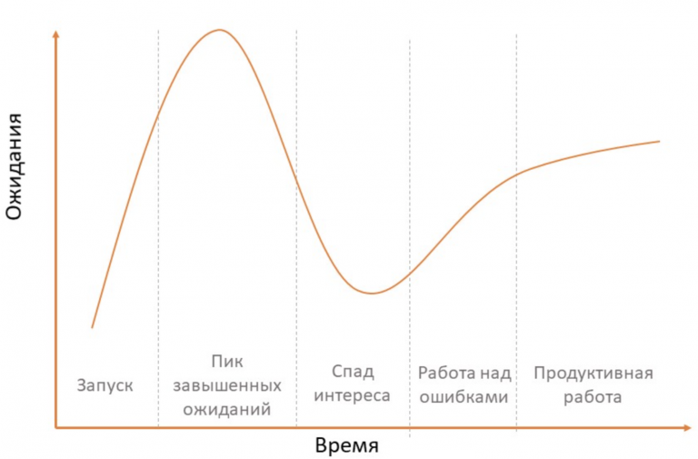

Кривая Гартнера (Gartner Hype Cycle) - графическое отображение цикла зрелости технологий.
Это поэтапный процесс, через который проходит любая инновационная бизнес-модель или технология от стадии хайпа до продуктивного использования.
Кривая имеет пять участков, отражающих каждую из пяти фаз цикла:
- Фаза запуска.
- Пик завышенных ожиданий
- Спад интереса
- Работа над ошибками
- Продуктивная работа
Кривая Гартнера используется как инструмент оценки и анализа рынков.
История микросервисов
Еще 20 лет назад Service-oriented architecture и Web Services были на пике популярности. Это был самый настоящий хайп. Особенность хайпа в том, что его применяют ради хайпа, а не для пользы дела, в массе своей даже не разобравшись в сути явления или технологии. Такое положение дел привело к тому, что количество определений и трактовок SOA и Web Services было примерно равно количеству внедрений 🙂 Это, в свою очередь, приводило к тому, что проблема подгонялась под решение. Сегодня то же самое происходит с микросервисами. Авторы статьи исследуют эволюционный путь от SOA к микросервисам на основе анализа литературы, как академической, так и научно-популярной.
Основная мысль заключается в том, что при широком внедрении SOA появились и новые стандарты: Web Services Description Language(WSDL), Business Process Execution Language(BPEL), целью которых было убрать барьеры между системами в гетерогенной среде с целью снижения сложности решения задач интеграции. На практике такие решения оказались несостоятельными, главным образом из-за невозможности своевременно реагировать на постоянно меняющиеся бизнес-требования.
Hype-цикл Гартнера
Сегодня то же c микросервисами. Авторы акцентируют внимание, что определение микросервисов как «SOA done right» не вполне корректно, потому что в микросервисах фокус смещается с reuse и composition на independence, replaceability и autonomy. В таком случае сервисы становятся микро с точки зрения их вклада в приложение, а не по количеству строк кода.
Определяют следующие, определяющие микросервисы, свойства:
- Независимо понимаемые
- Независимо реализуемые
- Независимо развертываемые
- Возможность одновременного сосуществование нескольких версий одного сервиса
- При необходимости - изменение топологии в режиме реального времени
- Отдельный микросервис может быть изменен без влияния на работу других микросервисов